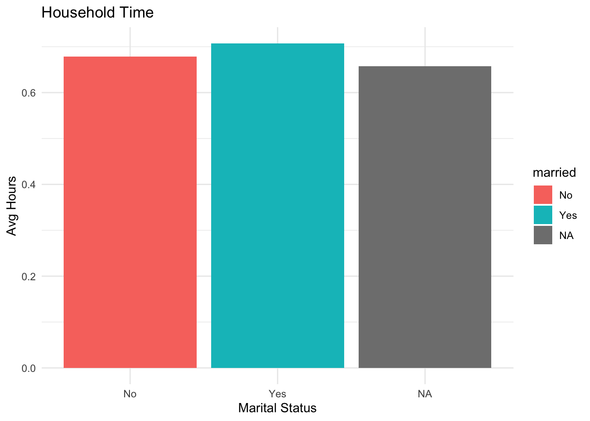
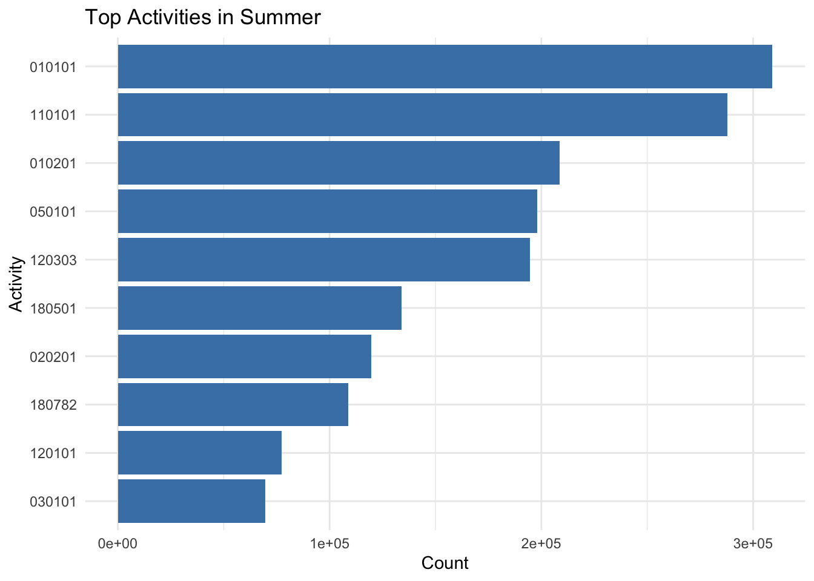
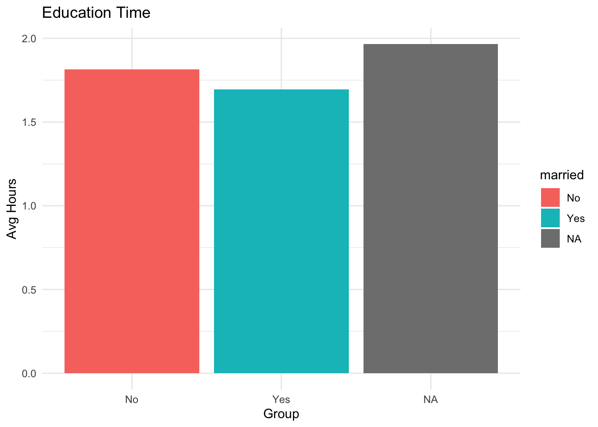
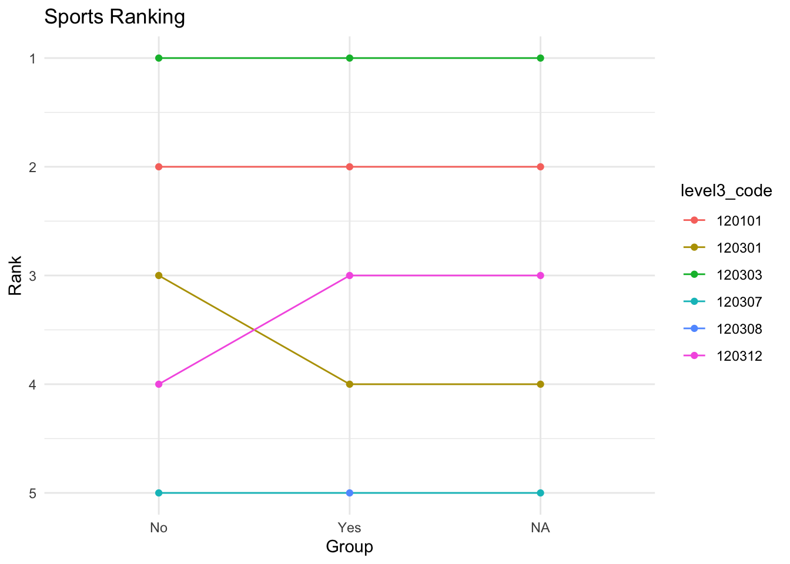
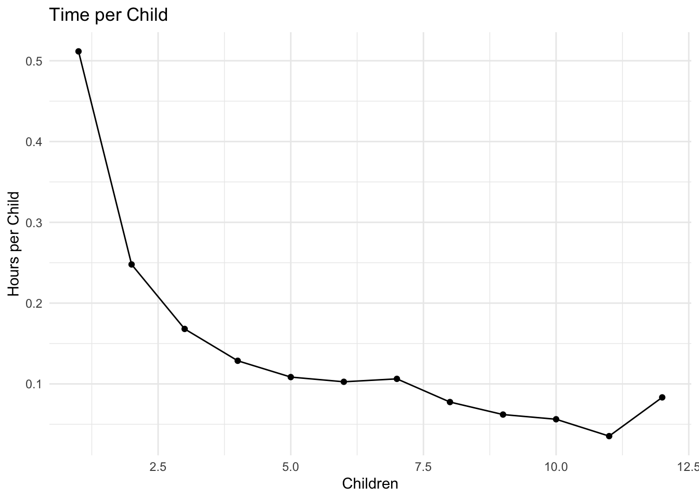
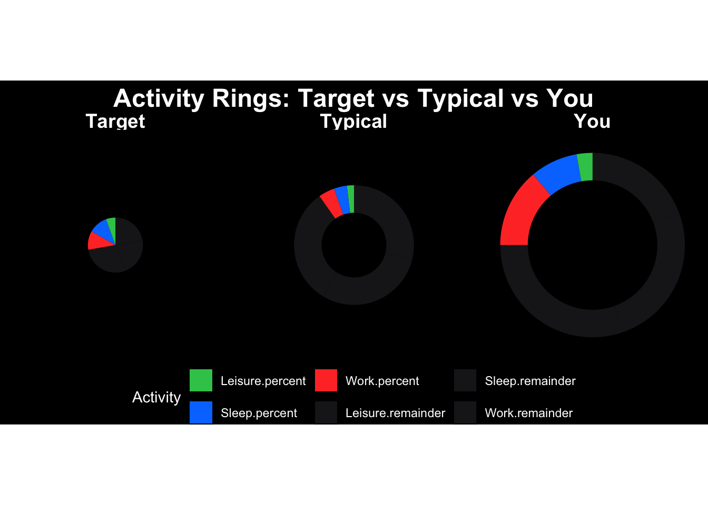

Dataset:American Time Use Survey—ATUS 2003‐2024 Multi‐Year Microdata Files
The ATUS datasets contain: df_resp: respondent-level data (time alone, year, survey weight) df_rost: demographic data (sex) df_act: activity-level data (time spent, activity codes) df_act_codes: mapping from activity codes to real-world activity names
Introduction
This project looks at how people spend their time each day, especially those who work full time. The goal is to understand how much time goes to work, sleep, and other activities like relaxing or taking care of yourself. By studying these patterns, we can see if people have a good balance in their daily lives or if they are too focused on work. This project also explores how simple insights can help people make better choices and improve their daily routines.
Data Acquisition and Preparation
Code related to Data Acquisition and Preparation goes here.
Remember that code blocks look like this:
library(tidyverse)
── Attaching core tidyverse packages ──────────────────────── tidyverse 2.0.0 ──
✔ dplyr 1.2.0 ✔ readr 2.2.0
✔ forcats 1.0.1 ✔ stringr 1.6.0
✔ ggplot2 4.0.2 ✔ tibble 3.3.1
✔ lubridate 1.9.5 ✔ tidyr 1.3.2
✔ purrr 1.2.1
── Conflicts ────────────────────────────────────────── tidyverse_conflicts() ──
✖ dplyr::filter() masks stats::filter()
✖ dplyr::lag() masks stats::lag()
ℹ Use the conflicted package (<http://conflicted.r-lib.org/>) to force all conflicts to become errors
Warning: There was 1 warning in `mutate()`.
ℹ In argument: `sex = case_match(TESEX, 1 ~ "M", 2 ~ "F")`.
Caused by warning:
! `case_match()` was deprecated in dplyr 1.2.0.
ℹ Please use `recode_values()` instead.
participant_id time_alone survey_year survey_weight
Min. :2.003e+13 Min. : 0.0 Min. :2003 Min. : -1
1st Qu.:2.007e+13 1st Qu.: 100.0 1st Qu.:2007 1st Qu.: 2942336
Median :2.012e+13 Median : 247.0 Median :2012 Median : 5416025
Mean :2.012e+13 Mean : 319.3 Mean :2012 Mean : 7571295
3rd Qu.:2.017e+13 3rd Qu.: 490.0 3rd Qu.:2017 3rd Qu.: 9425701
Max. :2.024e+13 Max. :1440.0 Max. :2024 Max. :209010030
summary(df_act)
participant_id activity_n_of_day time_spent_min
Min. :2.003e+13 Min. : 1.00 Min. : 1.0
1st Qu.:2.007e+13 1st Qu.: 5.00 1st Qu.: 15.0
Median :2.011e+13 Median :10.00 Median : 30.0
Mean :2.012e+13 Mean :11.82 Mean : 74.6
3rd Qu.:2.017e+13 3rd Qu.:16.00 3rd Qu.: 90.0
Max. :2.024e+13 Max. :91.00 Max. :1350.0
start_time stop_time level1_code
Min. :00:00:00.000000 Min. :00:00:00.000000 Length:4880021
1st Qu.:09:00:00.000000 1st Qu.:09:00:00.000000 Class :character
Median :13:52:00.000000 Median :13:53:00.000000 Mode :character
Mean :13:35:32.774195 Mean :13:44:17.812792
3rd Qu.:18:20:00.000000 3rd Qu.:18:20:00.000000
Max. :23:59:00.000000 Max. :23:59:00.000000
level2_code level3_code
Length:4880021 Length:4880021
Class :character Class :character
Mode :character Mode :character
Joining dataframes for further analysis
Joining df_act with df_resp: to get info of activities and time_spent_min with information of the survey survey_year, time_alone and survey_weight, with the common col participant_id.
df_join1 <- df_act |>left_join(df_resp, by ="participant_id")
Joining codes(level3_code) of df_act with df_act_codes that contains real names of the codes, despite there are not written exactly the same.
df_join2 <- df_join1 |>left_join(df_act_codes, by =c("level3_code"="code_level3"))
The roster dataset (df_rost) contains multiple rows per participant because it includes information about all individuals in the household. If we join it directly, it creates a many-to-many relationship, which duplicates rows and inflates the dataset. To solve this, first transform the roster data into a new dataset (df_sex) with only one row per participant by grouping and selecting a single value of sex. This allows us to perform a many-to-one join, safely adding the sex variable without duplicating activity records.
df_sex <- df_rost |>group_by(participant_id) |>summarize(sex =first(sex), .groups ="drop")df_full <- df_act |>left_join(df_resp, by ="participant_id") |>left_join(df_act_codes, by =c("level3_code"="code_level3")) |>left_join(df_sex, by ="participant_id")
We use the variable TEWHERE from the activity dataset.
act |>select(participant_id, activity_location)
# A tibble: 4,880,021 × 2
participant_id activity_location
<dbl> <chr>
1 2.00e13 Other
2 2.00e13 Unknown
3 2.00e13 Unknown
4 2.00e13 Home
5 2.00e13 Home
6 2.00e13 Home
7 2.00e13 Unknown
8 2.00e13 Unknown
9 2.00e13 Other
10 2.00e13 Unknown
# ℹ 4,880,011 more rows
5. Is the respondent enrolled in a college or university (not high school)?
We use this two variables: TESCHENR (enrollment status) TESCHLVL (education level)
resp |>select(participant_id, college_enrolled)
# A tibble: 252,808 × 2
participant_id college_enrolled
<dbl> <chr>
1 2.00e13 <NA>
2 2.00e13 No
3 2.00e13 No
4 2.00e13 No
5 2.00e13 <NA>
6 2.00e13 <NA>
7 2.00e13 No
8 2.00e13 No
9 2.00e13 No
10 2.00e13 No
# ℹ 252,798 more rows
Exploratory Analysis
TASK4: Exploratory Questions - Inline Values
1. How many different respondents have answered an ATUS survey since 2003?
n_respondents <-n_distinct(resp$participant_id)
A total of 252808 respondents have participated in the ATUS survey since 2003.
2. How many different sports does ATUS ask about as a “Level 3” activity?
`summarise()` has regrouped the output.
ℹ Summaries were computed grouped by married and level3_code.
ℹ Output is grouped by married.
ℹ Use `summarise(.groups = "drop_last")` to silence this message.
ℹ Use `summarise(.by = c(married, level3_code))` for per-operation grouping
(`?dplyr::dplyr_by`) instead.
fav_table |>gt()
010101
020101
110101
120101
No
4.19
1.33
0.56
1.18
Yes
4.01
1.25
0.57
1.08
NA
4.23
1.16
0.53
1.23
TASK 6: EXPLORATORY QUESTIONS GRAPH ANSWERS
1. How does the amount of time spent on household activities change as Americans age?
library(ggplot2)household_plot <- act |>inner_join(resp |>select(participant_id, married, survey_weight),by ="participant_id") |>filter(str_starts(level1_code, "02")) |>group_by(married) |>summarise(avg_hours =weighted.mean(time_spent_min, survey_weight, na.rm =TRUE)/60 )ggplot(household_plot, aes(x = married, y = avg_hours, fill = married)) +geom_col() +theme_minimal() +labs(x ="Marital Status", y ="Avg Hours", title ="Household Time")

Married individuals spend more time on household activities than unmarried individuals.
2. What are the most popular activities for Americans employed in education during the summer months?
summer_plot <- act |>inner_join(resp |>select(participant_id, employment_status),by ="participant_id") |>filter(employment_status =="Employed") |>count(level3_code, sort =TRUE) |>head(10)ggplot(summer_plot, aes(x =reorder(level3_code, n), y = n)) +geom_col(fill ="steelblue") +coord_flip() +theme_minimal() +labs(x ="Activity", y ="Count", title ="Top Activities in Summer")

Employed individuals spend most of their summer time on leisure-related activities.
3. Among students, how does time spent on educational activities vary by age?
edu_plot <- act |>inner_join(resp |>filter(!is.na(college_enrolled)) |>select(participant_id, married, survey_weight),by ="participant_id") |>filter(str_starts(level1_code, "06")) |>group_by(married) |>summarise(avg_hours =weighted.mean(time_spent_min, survey_weight, na.rm =TRUE)/60 )ggplot(edu_plot, aes(x = married, y = avg_hours, fill = married)) +geom_col() +theme_minimal() +labs(x ="Group", y ="Avg Hours", title ="Education Time")

Unmarried students tend to spend more time on educational activities.
4. Bump plot: how does interest in sports change across groups?
sports_plot <- act |>inner_join(resp |>select(participant_id, married),by ="participant_id") |>filter(str_starts(level1_code, "12")) |>count(married, level3_code) |>group_by(married) |>mutate(rank =rank(-n)) |>filter(rank <=5)ggplot(sports_plot, aes(x = married, y = rank, group = level3_code, color = level3_code)) +geom_line() +geom_point() +scale_y_reverse() +theme_minimal() +labs(x ="Group", y ="Rank", title ="Sports Ranking")

Sports preferences vary across groups, with some activities changing rank.
5. How does time per child change as family size increases?
child_plot <- act |>inner_join(resp |>filter(children_u18 >0) |>select(participant_id, children_u18, survey_weight),by ="participant_id") |>filter(str_starts(level1_code, "03")) |>group_by(children_u18) |>summarise(time_per_child =weighted.mean(time_spent_min / children_u18, survey_weight, na.rm =TRUE) /60 )ggplot(child_plot, aes(x = children_u18, y = time_per_child)) +geom_line() +geom_point() +theme_minimal() +labs(x ="Children", y ="Hours per Child", title ="Time per Child")

Time spent per child decreases as the number of children increases.
Final Insights and Deliverable
For the purpose of designing the time-tracking app, three target demographics were analyzed: stay-at-home dads, college undergraduates, and employed working professionals.
Stay at home dads are defined as non-employed respondents with children in the household, and they spend the majority of their time on childcare and household activities, with comparatively less time on leisure. This indicates a need for tools that help balance responsibilities with personal time.
College undergraduates tend to allocate more time to leisure and sleep than to education, with relatively few reaching an ideal level of study time. This suggests an opportunity to use gamification features to encourage more consistent academic habits.
Working people spend most of their day working and sleeping, so they don’t have much time left for relaxing or taking care of themselves. This shows why having a better balance between work and personal life is important.
When we look at how people use their time, we can see that many spend too much time on responsibilities and not enough on their well-being. In an ideal situation, people would have more time to rest, relax, and do things they enjoy. An app can use this kind of information to help users see how they compare to others like them and encourage them to build healthier daily habits.
RING VISUALIZATIONS
I created a variable to represent the average of hours for workers and that is used as a Typical hours. Target ideal life was created with “x” values of ideal timeframes. Finally i added the personal or the “tracking” real daily life data. Added all together in the rings variable.
ggplot(rings_plot, aes(x = type, y = value, fill =interaction(category, part))) +geom_col(width =0.85, color =NA) +coord_polar(theta ="y") +facet_wrap(~type) +scale_fill_manual(values =c("Work.percent"="#FF3B30","Work.remainder"="#1c1c1e","Sleep.percent"="#007AFF","Sleep.remainder"="#1c1c1e","Leisure.percent"="#34C759","Leisure.remainder"="#1c1c1e" )) +theme_void() +theme(legend.position ="bottom",strip.text =element_text(size =14, face ="bold", color ="white"),plot.background =element_rect(fill ="#000000", color =NA),panel.background =element_rect(fill ="#000000"),legend.text =element_text(color ="white"),legend.title =element_text(color ="white"),plot.title =element_text(size =18,face ="bold",hjust =0.5,color ="white" ) ) +labs(title ="Activity Rings: Target vs Typical vs You",fill ="Activity" )

NoteAI Usage Statement
ChatGPT was used to help debug some errors in the code of this project and to help in a business proper manner writing the ideas to respond the requests.